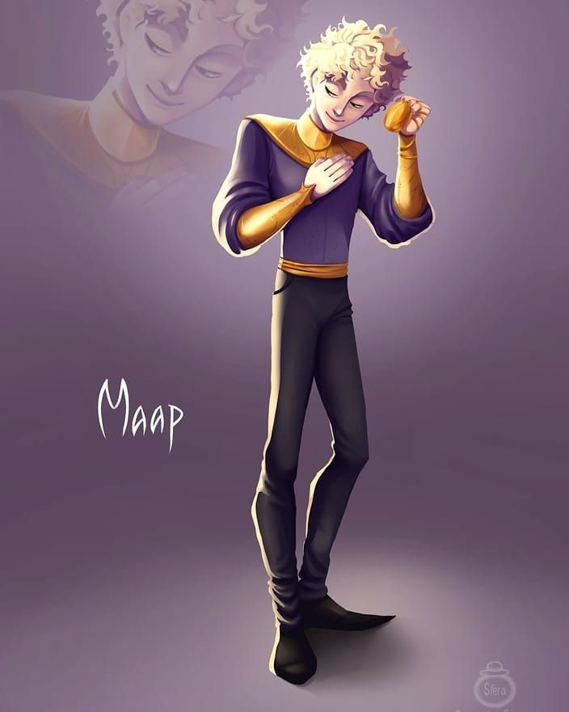

Часодеи
Что это?
серия книг украинской русскоязычной писательницы Натальи Щербы, написанная в жанре подросткового фэнтези. Главной героиней серии является школьница Василиса Огнева, попавшая в особый мир, жители которого умеют управлять временем.
Какие книги входят в серию.
- Часовой ключ
- Часовое сердце
- Часовая башня
- Часовое имя
- Часограмма
- Часовая битва
Часовой ключ.
Двенадцатилетняя Василиса Огнева, ни разу не видевшая своих родителей, живёт со старенькой опекуншей. Внезапно приезжает незнакомец и забирает её в дом отца. Отец богат, живёт в большом доме, у него есть шофёр и ещё четверо детей, кроме Василисы: Норт, Дейла и два младших мальчика - Эрик и Ноэль. Никто из этой большой семьи не рад Василисе: отец грубо с ней обращается, а дети дразнят. Однажды она становится свидетельницей странного события: отец и приехавшие к нему гости, покрутив стрелки часов в библиотеке, проходят сквозь стену и исчезают. Последовав за ними, Василиса оказывается в большом замке и подслушивает разговор отца с духом Астрагором, который управляет временем. Девочка узнаёт, что существует два мира, Остала — обычная Земля, и Эфлара — мир волшебников-часодеев, способных колдовать, используя временные парадоксы и вероятности. Часодеи создали Эфлару, отделив её от Осталы временным разрывом, который неуклонно сокращается, а это грозит Эфларе уничтожением: Остала, являющаяся изначальным миром, может поглотить её. Часодеи возлагают большие надежды на Алый Цвет, расцветающий раз в тысячу лет и способный исполнить любое желание. Предполагается, что можно использовать это желание для увеличения разрыва между мирами. Попасть к Алому Цвету могут семь молодых часовщиков, владеющих семью ключами. встав на Часовой Круг.
Василиса вместе с братьями и сестрой проходит проверку на уровень способности к волшебству и показывает высшую часовую степень. Выясняется, что именно этого и опасалась вся семья: с высшей степенью Василиса имеет право на всё наследство, которое отец планировал оставить старшему сыну, и вносит путаницу в планы правителей часового мира. Отец вскоре придумывает, как использовать Василису в своих целях: вынудив девочку переместиться на Эфлару с помощью Ника, сына своего давнего врага Константина Лазарева, отец Василисы обвиняет Лазарева в похищении дочери. Лазарев попадает под арест.
Поскольку отец не собирается проводить для Василисы Посвящение, без которого она не может колдовать, она сбегает из отцовского замка с приятелем Ника Фэшем Драгоцием и феей Дианой Фрезер, после чего отправляется в царство фей, намереваясь попросить их провести Посвящение. При побеге Ника зачасовывает (выкидывает из временного коридора) Маришка Резникова (Хрустальная Ключница).
Василиса, Фэш и Диана прибывают к феям и участвуют в Чарованиях (конкурсе талантов). Скоро к Василисе приходит придворная фея Клементина и говорит, что готова исполнить одно желание Василисы. Как только девочка узнаёт, что Ника вернули к нормальной жизни, она просит часового посвящения. При Посвящении Василиса получает часовое имя (Василёк), крылья, исполнение одного простого желания (она просит фей дать Нику часовой дар, о котором тот мечтает), и два подарка: от светлых фей — Рубиновый Ключ для Часового Круга, а от тёмных — кинжал Стальной Зубок. Вскоре Фэшу и Диане феи вручают Серебряный и Железный ключи. Позже Василиса узнаёт, что Клементина — на самом деле Белая Королева, повелительница фей.
Ключ у неё вскоре отбирает Марк (Золотой Ключник), вынуждая Василису передать его старшему брату девочки. После перед Василисой появляется Чёрная Королева, повелительница лютов (тёмных фей) и сообщает ей, что кинжал, который ей подарили, — это не что иное как Чёрный Ключ, самый главный из ключей Часового Круга. Василиса спешит к Часовому Кругу, но попадает во временную петлю, созданную Еленой Мортиновой, которая намеревалась убить девочку. Во время битвы Василису спасает отец и девочка, выйдя из петли, занимает своё место на Круге. Книга заканчивается тем, что Часовой Круг начинает вращаться, перемещаясь во времени.
Часовое сердце
Члены Часового Круга попадают на Осталу, там они оказываются в детском лагере «Вершина»(который загадала сама Василиса). Ожидая цветения легендарного цветка, Астрагор обещает помочь им в обмен на чашу Алого Цвета. Однако Василиса узнаёт, что, перерезав стебель цветка, она состарится или умрёт. Так же она знакомится с двоюродной сестрой Фэша — Захаррой Драгоций.
Так же, во время похода в замок Змиулан с Василисой связывается её отец и дарит ей алый часолист и периодически отправляет по нему уроки часодейства для своей дочери.
Позже, ребята из лагеря собираются в поход,куда идёт Василиса и все её друзья (Фэш, Диана, Ник, Лёшка, Витя-Жаба). Плотно поужинав гречневой кашей, все идут к палатками и быстро засыпают. Но Василиса никак не могла уснуть, поэтому решила выйти и попробовать почасовать. Но на полянке в лесу она встречает Фэш, и у них завязывается небольшой откровенный разговор о семье Драгоция. Так же, в честь грядущего дня рождения Огневой, мальчик решает сделать ей подарок в виде личного уголка в часолисте. В этом уголке и происходит первый поцелуй Фэша и Василисы. Позже фея Диана начнёт расспрашивать Огневу об её похождениях ночью и догадается, что Василиса целовалась с Драгоцием.
Вскоре ключники ныряют в безвременье, чтобы создать с помощью ключей — карту, а также достать предметы которые помогут им в будущем. Василиса во время своего путешествия во времени на 1000 лет назад (ровно 1000 лет назад было прошлое цветение Алого Цвета), встречает величайшего часовщика Эфларуса, который создал разрыв между Эфларой и Осталой. Он объясняет Василисе, что нужно сделать временной разрыв на несколько часов назад, и тогда Остала, как основная планета, будет обгонять Эфлару, а разрыв будет увеличиваться. К тому же с Осталы на Эфлару не смогут переходить духи — враги часовщиков, от которых те сбежали в отдельный мир.
Фэш Драгоций, узнав, что Василисе грозит опасность после срезания Алого Цветка, просит у своего дяди-Великого Духа Осталы разрешения взять совет у его гадательного зеркала. Астрагор позволяет Фэшу воспользоваться зеркалом, но в обмен вынуждает его подписать договор: Фэш обязуется служить Астрагору до совершеннолетия, а потом предоставить ему право переселиться в своё тело. Фэш посылает Василисе совет гадательного зеркала анонимной запиской:
«Проклятие тёмное быстро развей
Сердце хрустальное просто разбей,
Найди его и дойдёшь до вершин,
А синяя искра вернёт тебе жизнь.»
Когда Алый Цветок наконец расцветает, Василиса перерезает его стебель. Затем, действуя согласно совету зеркала, она откапывает среди корней цветка хрустальное сердце планеты и разбивает его, желая, чтобы Эфлара ушла на сотню часов назад. Её желание исполняется, а синяя искра, находившаяся в сердце планеты переселяется в Василису. Однако во время обряда зачасовывают Диану. Астрагор, который лишь для вида говорил, что ему нужна чаша цветка, а на деле охотился за хрустальным сердцем, с неудовольствием отступает.
Часовая башня
Василиса поступила в Школу Светлочасов. Пройдя лабиринт Тайноса, она получила высший уровень (двенадцатый), но директор школы Елена Мортинова попыталась отказать ей в приёме. Благодаря вмешательству Астариуса Василиса была принята на нулевой уровень. Её учителем был мистер Родион Крафт, учитель с третьей часодейной степенью. Василиса успешно училась и получала у него высший балл.
Во время визита в Рубиновый Шпиль Фэш выкрал стрелу Дианы, чтобы отправиться к феям и расчасовать её. Стрелу передали Даниле на время обыска. Во время праздника Листопада Василиса связалась с Чёрной Королевой, и та помогла ей добраться до поля старочасов. Проделав сложный и длинный путь, Огнева всё-таки расчасовала Диану. Чёрная королева помогла им выбраться из Русалочьей Тропы — так называется озеро, находившееся в королевстве Чёрной королевы. В благодарность феи дали Василисе мешочек рубинов, а она подарила его Даниле на день подарка под подушкой.
В конце книги ключники находят Расколотый замок. Марк и Норт уносят стрелу с Часовой башни, которая требовалась Астрагору, а Василиса становится на место стрелы и отматывает время на часах назад, вернув Расколотый замок к жизни, восстановив его с помощью синей искры. Теперь часовщики могут начать исследовать его.
В последней главе Астрагор предлагает Фэшу и Марку договор: часовое имя Василисы в обмен на исполнение любого желания. Фэш (который знает имя) рассказывает всё это Захарре, и ей это очень не нравится. Она пытается отговорить его от этой затеи…
Часовое имя
Фэш Драгоций знает часовое имя Василисы. Но он влюблён в Василису и, несмотря на их ссору, ничего не говорит Астрагору. Василиса тем временем приезжает в замок Чёрной Королевы. Там она встречает Маара — часовщика с первой степенью, который должен был овладеть ЧерноКлючом. Он неравнодушен к Василисе, но она относится к нему как в другу.
На дне рождения своих брата и сестры Василиса знакомится с Мираклом — старым другом её отца. Его профессия — часовой архитектор (зодчий) очень заинтересовывает Василису.
Ключники должны отправиться в Расколотый Замок, чтобы отыскать знаки своих комнат: Хрустального паука, Крыло летучей мыши, Каплю крови, Серебряную шестерёнку и т. д. — знаки всех ключей, чтобы с их помощью найти комнату, к которой принадлежит каждый Ключ. Василиса находит Чёрную Комнату, но никому не говорит об этом. Затем её брат сталкивает её в Раскол. После несчастного случая в Расколотом замке Василису отстраняют от второго путешествия, но после Темпогонок Василиса сама пробирается в Змиулан и совершает переход в Расколотый замок через фамильные часы Драгоциев. В Чёрной Комнате она находит свёрток. По возвращении её обнаруживают, Василиса просит Фэша помочь убежать, но он сдаёт девочку, и ту отправляют в подземелье.. После этого возникает скандал: все думают, как поступить с Василисой, и решают пустить её в третью экспедицию.
Фэш сообщает своё числовое имя Василисе (Змееносец), потому что знает, что в этой борьбе Астрагор в него вселится, а зная его числовое имя, девочка может убить их обоих и тем самым спасти себя.
Василиса всё-таки рассказывает о чёрной комнате и о крыле, поэтому в Расколотом Замке начинается ссора из-за этой комнаты между Нортоном, Чёрной Королевой, Мираклом, Астрагором, Роком и Войтом. Фэш хочет зачасовать Войта, чтобы тот не убил Василису, но не успевает: Астрагор вселяется в него. Фэш борется с Астрагором в своём теле, но слабеет с каждой секундой. Белая Королева решает вступить в борьбу с Астрагором, так как знает его числовое имя, тем самым пытаясь спасти Фэша. Всё получается: Фэш спасён, а Астрагор блуждает где-то во времени.
Пока всё улаживается, Василиса приходит к Фэшу и они мирятся. Фэш показывает свою первую заставку с бушующим морем Василисе. Он предлагает прогуляться там, на что Василиса не соглашается, но Фэш хватает её за руку и перемещает девочку в заставку. После Фэш признаётся ей в любви: «Вот за это ты мне и нравишься, — Фэш решительно подошёл ближе и уверенным жестом заправил ей мокрую прядку волос за ухо. — Ты такая же ненормальная, как я». Он обнимает Василису и вспоминает, как они с Ником пытались отправить её на Осталу и что было бы если им удалось это сделать. Потом Фэш приближается к ней, и они почти целуются, но входит Нортон-старший. И конечно же, он всё видит. Он остаётся с Фэшем наедине и рассказывает настоящую (ну, или не совсем) историю, связанную со смертью родителей Фэша . Оказывается, сам Нортон-старший в их гибели не виноват. Потом Нортон предлагает Фэшу поселиться в Черноводе (в его замке), и мальчик соглашается. У них «временное перемирие». Но все знают, что Астрагор скоро вернётся в новом теле и, возможно, это будет тело Фэша…
После Фэш прилетает к Василисе в комнату, и они созывают Орден Дружбы. Пока они ждут Орден, Фэш исполняет песню про луну. Они с Василисой снова готовы поцеловаться, но им мешает Захарра. Василиса показывает всем свои находки из Расколотого замка (карту и осколок), и дети решают отправиться в путешествие по часовым башням, но пока не знают, каким образом.
Часограмма
Астрагор вернулся но уже в теле клокера и зачасовывает Яриса (Бронзового Ключника). Елена Мортинова переходит на сторону Астрагора и говорит свое числовое имя Марку (Хладнокровь) взамен на его (Вулкан) а также зачасовывает его предоставив его тело Астрагору. Все ключники идут в Расколотый Замок где Часовой флер Василисы показывает таинственные комнаты ключей. Во время битвы Елена Мортинова убивает Лиссу (Белую королеву). А Фэша Астрагор запирает в Пустоте (Хрустальной Комнате), а сам говорит, что СреброКлючник был побеждён собственной эррантией в Серебряной Комнате.
Астрагор предлагает Василисе помощь в изучении Часового Флера, а также стать его ученицей на год. Они подписывают договор, по которому они не могут причинить друг другу вреда. Василиса с Захаррой уезжают в Змиулан, но перед этим Ник дарит Василисе кольцо с вращающимися шестерёнками. Если шестерёнки на нём вертятся, значит Фэш жив.
Часовая битва
Василиса помогает другу выйти из Пустоты, а до этого она несколько раз встречалась с ним в Луночасе. В один из этих раз Фэш попросил Василису зажечь в его комнате на подоконнике свечу. Свечу заметил Рок и уговорил отца (Астрагора) вызволить брата по Ордену из Пустоты. Странное появление Фэша хранило в себе много тайн, он говорил ерунду и Василиса не вытерпев заставляет друга всё ей рассказать, на что Фэш выходит из себя. Через некоторое время Василиса получает подарок от Астрагора - Часовое превращение. Рок оставляет её до обеда в Зале, в которой Василиса тренировалась в превращении Огнежаром. На празднике по поводу прибытия Столеттов (Остальской семьи часовщиков, живущих в драголисе) Василиса заметила на себе долгий и пристальный взгляд ярко-голубых глаз, после которого к ней вернулось хорошее настроение. После беседы с Хронимарой Столетт Фэш повёл Василису в комнату по приказу Рока. Но он повёл её выше и они пришли на веранду, где Фэш и Василиса немного поговорили. Позже подошёл Примаро Драгоций и предложил отвести их в зал где должен был состояться разговор между Астрагором и Столеттами. Но их замечают, и Василису с Фэшем забирают в Драголис. Там Василису заставляют работать с тиккером, а также учат янтарению — заключения своих воспоминаний в янтарь. Вместе с Фэшем они пробовали бежать, но Хронимара Столетт нашла их и вернула в деревню. После их забрали в Змиулан, где Астрагор объявил своему племяннику о перевоплощении в него. Фэш сопротивляется. Норту предстояло открыть Рубиновую комнату, но ключ не признал хозяина. Василисе приходиться самой разгадывать тайну комнаты, и загадав желание, она отпускает Нортона-старшего к своей семье, к Нире (матери Норта и Дейлы). Предстояло Сражение Василисы и Астрагора, но им помешал отец Василисы. Астрагор выходит из тела мальчика для того что бы сразиться с Нортоном-старшим, и побеждает его, доводя до состояния полу-смерти. В это время Мортинова зачасовывает Фэша. Появляется Марк (затерянный во времени) и говорит Василисе числовое имя Елены, и Василиса её зачасовывает. Тут появляется Шакл и пытается разбить статую Фэша. На помощь пришли Римма и Цзия. Они зачасовали Шакла. Василиса пытается спасти Фэша, но неудачно. Астрагор снова появляется, но в виде Маркуса. Он рассказал Василисе про чашу Алого Цветка. И оказалось, что чаша — это корона. Она будет принадлежать Времени. А тот кто срезал цветок и станет Временем. Василиса призналась лже-Марку, что это она срезала цветок. Но было поздно. Астрагор уже надел корону и та стала менять цвет, и, когда корона стала железной, он умер. Старшие окружили Астрагора, и Александр Драгоций вместе с остальными запер его в янтарную шкатулку. Василисе все-таки удалось спасти Фэша с подсказкой Миракла и их общего воспоминания, заключённого в янтаре. Василиса упала в обморок. Она очнулась уже в своей комнате и увидела прадеда. Он сказал, что до полуночи ещё 2 часа. В полночь Василиса должна была уйти из своей параллели в другую, чтобы спасти отца. Василиса узнала от друзей, что в полночь все увидят Новое Время (Властелина Времени). Она не сказала друзьям о зеркале и о переходе в другую параллель. Она ушла под предлогом, что ей надо было поговорить с Мираклом. Фэш полетел за ней. Вдруг возле Василисы появилось зеркало. Она не хотела говорить, зачем оно здесь. Василиса вошла в зеркало, а за ней зашёл и Фэш. Они оказались в Расколотом Замке. Рядом с ними лежала корона. Василиса видит женскую корону, а Фэш — мужскую. Корона раздваивается. Приходит Родион Хардиус и говорит, что теперь должно быть два Времени, так как планеты сейчас две — Эфлара и Остала. Василиса и Фэш становятся Новым Временем и вместе уходят в другую временную параллель.
Главные герои
Василиса Огнева
главная героиня, дочь Нортона и Лиссы Огневых, черноключница.
Фэш Драгоций
владелец серебряного ключа, один из старших учеников Астрагора.
Ник Лазарев
часовой мастер, сын Константина Лазарева, лучший друг Фэша Драгоция и Василисы Огневой.
Захарра Драгоций
подруга Василисы, Ника, Дианы и Маара, племянница Астрагора.
Диана Фрезер
фея, воспитанница Диары Дэлш, подруга Василисы и Фэша, придворная фея Белой Королевы.
Маар Броннер
воспитанник Черной Королевы, обладает первой часовой степенью.
Маркус Ляхтич
золотой ключник, бывший враг Василисы Огневой.
МаришкаРезникова
враг Василисы и её друзей, хрустальная ключница.
Нортон-младший Огнев
старший брат Василисы Огневой
Дейла Огнева
родная сестра Норта и сводная (по отцу) Василисы.
Астрагор
великий дух Осталы.

Белая королева(Лисса)
королева фей, возлюбленная Нортона-старшего, мать Василисы Огневой.
Чёрная королева(Нерейва)
королева лютов, бабушка Василисы.
Елена Мортинова
одна из главных антагонисток серии книг «Часодеи».